Portfolio de Projets SAÉ — Réseaux & Télécommunications
Chaîne d'acquisition et de centralisation automatique de métriques de température et de puissance de signal (RSSI).
user-data / network-config)[cite: 58], IP fixe 192.168.1.104/24, SSH et bus SPI/I2C/1-Wire.measures.php)[cite: 58].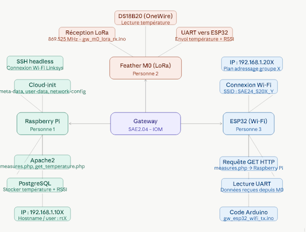
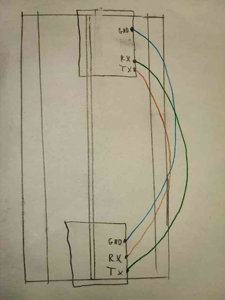
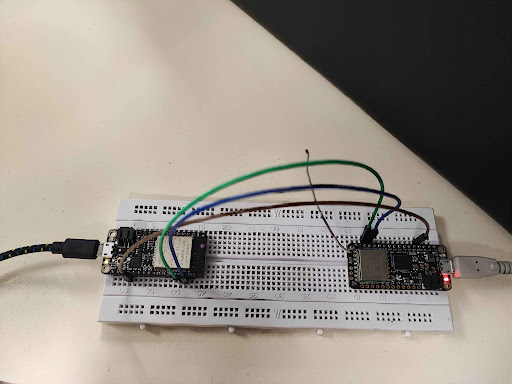
Audit d'infrastructure virtuelle KVM, qualification de débit utile, métrologie vidéo adaptative et configuration d'un NAS OpenMediaVault.
lscpu, free -m) sur VM Linux sous hyperviseur KVM (4 vCPUs, 4 Go RAM)[cite: 68].Retr = 0)[cite: 67].enp0s3 (NAT 10.0.2.15/24) et enp0s8 (Host-Only 192.168.56.101/24)[cite: 68].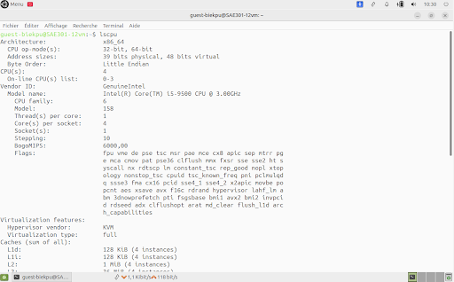
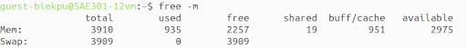
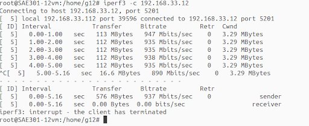
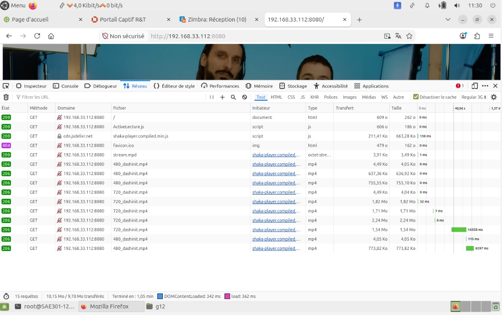
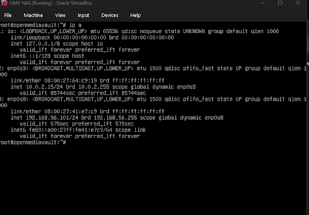
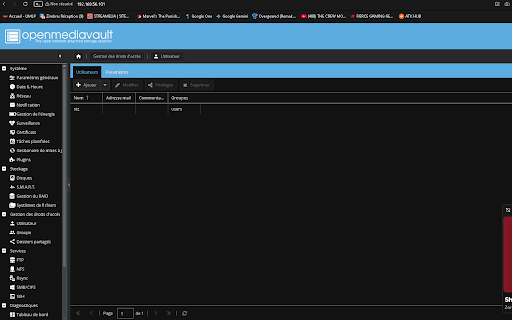
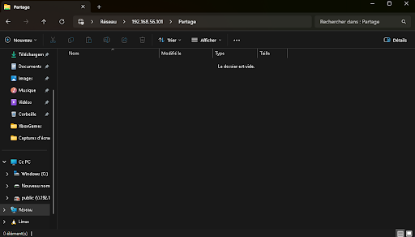
Recensement, gestion et cartographie interactive de la promotion BUT R&T.
etudiants.json / villes.csv et intégration des données géographiques[cite: 40, 62].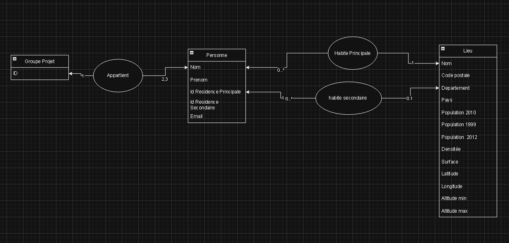
Analyse fréquentielle, filtrage numérique et qualification de la voix sur IP.